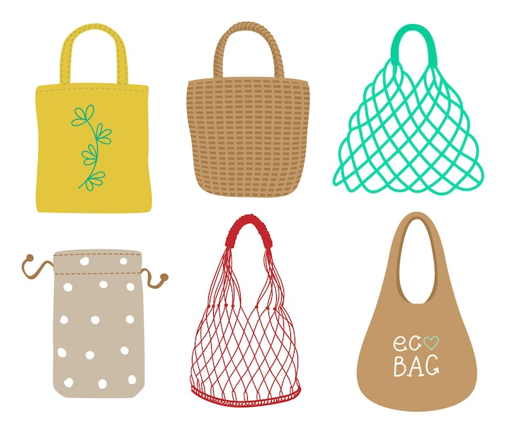
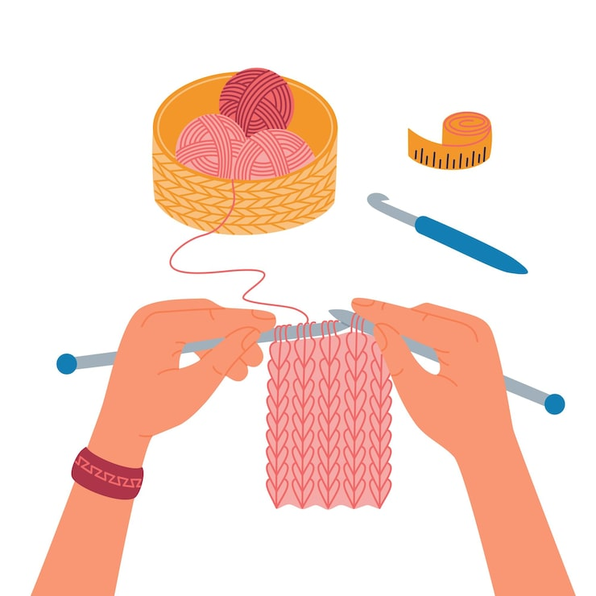

А ЗДЕСЬ
МОЖЕТ БЫТЬ
ВАША РЕКЛАМА
| Индивидуальный заказ: создам идеальное кашпо,корзину или другую вещь по нужным размерам и эскизам | |
 |
Консультация: помогу в выборе цвета и фактуры под интерьер |
 |
Аксессуары: стильные авоськи и бутылочницы для жизни в стиле эко |
 |
Проведу индивидуальные уроки по вязанию крючком или спицами для начинающих. Помогу освоить основы и связать ваше первое изделие |
Как сохранить красоту ваших изделий
Изделия из натуральных материалов любят бережный уход. Чтобы они не теряли форму и цвет, следуйте простым правилам
| Стирка | |
| Ручная стирка | Идеальный вариант. Используйте прохладную воду (30–40°C) |
| Деликатный режим | Если используете машинку, выбирайте режим без сильного отжима |
| Мягкие средства | Лучше использовать жидкие гели, они легче вымываются из волокон |
| Особо об изделиях из джута | Джут не любит полноценную стирку. От воды он может стать грубым, потемнеть или потерять форму. Если изделие сильно намокло, оно может приобрести специфический запах сена (который исчезает после полной просушки). Натуральный джут имеет свой природный запах. Если он кажется вам слишком интенсивным, просто оставьте вещь на свежем воздухе на пару дней — запах выветрится. Если корзина помялась, отпарьте её утюгом. Джут отлично держит форму после горячего пара. После отпаривания дайте вещи остыть и «запомнить» форму. Со временем джут может стать чуть мягче и ворсистее — это естественный процесс, который придает вещи особый шарм натурального дерева |
| Сушка и форма | |
| Не выкручивайте | Аккуратно отожмите изделие через махровое полотенце |
| Горизонтальная сушка | Разложите вещь на ровной поверхности, придав ей правильную форму |
| Никаких батарей | Сушка на радиаторе может деформировать изделие |
| Маленькие хитрости | |
| Отпаривание | Если вещь, кашпо или корзинка помялись, пройдитесь по ним паром (не прижимая утюг плотно), и они снова станут как новые |
| Жесткость | Если хотите, чтобы корзинка стояла «как каменная», можно использовать легкий раствор крахмала |
| Никаких батарей | Сушка на радиаторе может деформировать изделие |